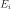
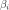
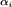
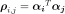
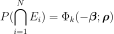
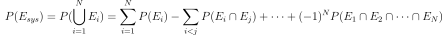

SystemFORM¶
- class SystemFORM(*args)¶
Approximation algorithm for system events based on FORM.
Each event  is represented by its reliability index  and the hyperplane defined by the  normal coefficients obtained via a preliminary FORM approximation.
For an union (series systems) the probability writes:

where 
For an intersection (parallel system) the probability writes:

In practice the event has to be defined under its disjonctive normal form (union of intersections). Each probability of intersection region is computed using the previous formula, then the Poincare formula is used to combine each union:

More details can be found in [lemaire2009], at the chapter Reliability of systems.
- Parameters
- solver
OptimizationAlgorithm Optimization algorithm used to research the design point.
- event
RandomVector Failure system event, in disjunctive normal form (either a union of intersections, or a single intersection)
- physicalStartingPointsequence of float
Starting point of the optimization algorithm, declared in the physical space.
- solver
See also
Notes
As a leaf event may appear several times in the system event tree, and as a FORM calculus is run for each unique leaf event, there may be less items in the FORM results collection (returned by
getFORMResultCollection()) than leaf events.Examples
>>> import openturns as ot >>> dim = 2 >>> X = ot.RandomVector(ot.Normal(dim)) >>> e1 = ot.ThresholdEvent(ot.CompositeRandomVector(ot.SymbolicFunction(['x1', 'x2'], ['(x1+2*x2)^2']), X), ot.Greater(), 5.0) >>> e2 = ot.ThresholdEvent(ot.CompositeRandomVector(ot.SymbolicFunction(['x1', 'x2'], ['(x2+3*x1)^2']), X), ot.Greater(), 5.0) >>> event = ot.IntersectionEvent([e1, e2]) >>> solver = ot.AbdoRackwitz() >>> starting_pt = [0.1] * dim >>> algo = ot.SystemFORM(solver, event, starting_pt) >>> algo.run() >>> result = algo.getResult() >>> form_results = result.getFORMResultCollection() >>> pf = result.getEventProbability()
Methods
Accessor to the result.
Accessor to the object's name.
getEvent()Accessor to the event of which the probability is calculated.
getId()Accessor to the object's id.
getName()Accessor to the object's name.
Accessor to the optimization algorithm used to find the design point.
Accessor to the starting point of the optimization algorithm.
Accessor to the result.
Accessor to the object's shadowed id.
Accessor to the object's visibility state.
hasName()Test if the object is named.
Test if the object has a distinguishable name.
run()Perform the research of the design point.
setEvent(systemEvent)Accessor to the event of which the probability is calculated.
setName(name)Accessor to the object's name.
setNearestPointAlgorithm(solver)Accessor to the optimization algorithm used to find the design point.
setPhysicalStartingPoint(physicalStartingPoint)Accessor to the starting point of the optimization algorithm.
setShadowedId(id)Accessor to the object's shadowed id.
setVisibility(visible)Accessor to the object's visibility state.
- __init__(*args)¶
- getAnalyticalResult()¶
Accessor to the result.
- Returns
- result
AnalyticalResult Result structure which contains the results of the optimisation problem.
- result
- getClassName()¶
Accessor to the object’s name.
- Returns
- class_namestr
The object class name (object.__class__.__name__).
- getEvent()¶
Accessor to the event of which the probability is calculated.
- Returns
- event
RandomVector Event of which the probability is calculated.
- event
- getId()¶
Accessor to the object’s id.
- Returns
- idint
Internal unique identifier.
- getName()¶
Accessor to the object’s name.
- Returns
- namestr
The name of the object.
- getNearestPointAlgorithm()¶
Accessor to the optimization algorithm used to find the design point.
- Returns
- algorithm
OptimizationAlgorithm Optimization algorithm used to research the design point.
- algorithm
- getPhysicalStartingPoint()¶
Accessor to the starting point of the optimization algorithm.
- Returns
- point
Point Starting point of the optimization algorithm, declared in the physical space.
- point
- getResult()¶
Accessor to the result.
- Returns
- result
MultiFORMResult Contains the global result as well as the sub FORM results.
- result
- getShadowedId()¶
Accessor to the object’s shadowed id.
- Returns
- idint
Internal unique identifier.
- getVisibility()¶
Accessor to the object’s visibility state.
- Returns
- visiblebool
Visibility flag.
- hasName()¶
Test if the object is named.
- Returns
- hasNamebool
True if the name is not empty.
- hasVisibleName()¶
Test if the object has a distinguishable name.
- Returns
- hasVisibleNamebool
True if the name is not empty and not the default one.
- run()¶
Perform the research of the design point.
Notes
Performs the research of the design point and creates a
AnalyticalResult, the structure result which is accessible with the methodgetAnalyticalResult().
- setEvent(systemEvent)¶
Accessor to the event of which the probability is calculated.
- Parameters
- event
RandomVector Event of which the probability is calculated.
- event
- setName(name)¶
Accessor to the object’s name.
- Parameters
- namestr
The name of the object.
- setNearestPointAlgorithm(solver)¶
Accessor to the optimization algorithm used to find the design point.
- Parameters
- algorithm
OptimizationAlgorithm Optimization algorithm used to research the design point.
- algorithm
- setPhysicalStartingPoint(physicalStartingPoint)¶
Accessor to the starting point of the optimization algorithm.
- Parameters
- pointsequence of float
Starting point of the optimization algorithm, declared in the physical space.
- setShadowedId(id)¶
Accessor to the object’s shadowed id.
- Parameters
- idint
Internal unique identifier.
- setVisibility(visible)¶
Accessor to the object’s visibility state.
- Parameters
- visiblebool
Visibility flag.